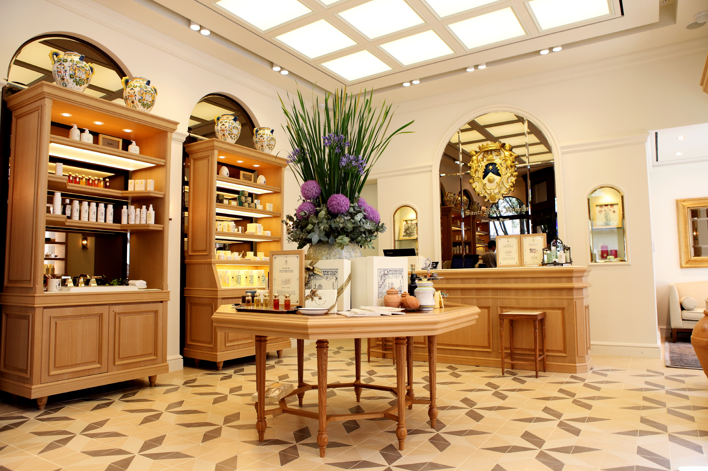

홈 > 브랜드 매거진 > 산타 마리아 노벨라
산타 마리아 노벨라
산타 마리아 노벨라(Santa Maria Novella)는 1221년 피렌체 수도원 약제실에서 기원한, 세계에서 가장 오래된 약국으로 알려진 이탈리아 향수·화장품 브랜드이다.
산업 분야 뷰티·퍼스널케어 · 공개 등급 자료 기반 · 브랜드 평가 4.3 ★

SM
산타 마리아 노벨라
한눈에 보는 브랜드
산타 마리아 노벨라(Officina Profumo-Farmaceutica di Santa Maria Novella)는 1221년 피렌체에 정착한 도미니코회 수도사들이 약초원을 가꾸며 연고와 약을 만든 데서 비롯된 이탈리아의 향수·약방이다. 1612년 일반 판매 약국으로 정식 출범했고, 1221년 이래 같은 자리에서 제조 전통을 이어와 세계에서 가장 오래된 약국의 하나로 꼽힌다.
현재 이탈리아 투자회사 이탈모빌리아레가 지분 전량을 보유하며, 30여 개국에 400곳이 넘는 판매처를 둔다.
브랜드 관점
산타 마리아 노벨라의 핵심 경쟁력은 대형 뷰티 그룹이 모방하기 어려운 800년 헤리티지와 수도원에서 내려온 제조법에 있다. 합성 향료를 앞세운 대중 향수와 달리, 귀한 천연 원료와 수작업 비중이 높은 니치·럭셔리 포지션을 고수하며 포푸리와 콜로니아 같은 고전 제품을 그대로 이어간다.
2020년 이탈모빌리아레가 경영권을 인수한 뒤 매장과 숍인숍을 빠르게 늘려, 오랜 헤리티지를 지키면서도 글로벌 유통을 확장하는 전략을 취했다. 2024년 매출이 25% 늘어 약 7천만 유로에 이른 점은 이 방향이 통하고 있음을 보여준다.
한국에서도 신라면세점·갤러리아·신세계 등 프리미엄 채널과 포푸리를 중심으로 두터운 마니아층을 형성하고 있다.
시작과 성장
기원은 1221년으로 거슬러 올라간다. 그해 피렌체에 들어온 도미니코회 수도사들은 산타 마리아 인터 비네아스('포도밭 사이의 성모') 부근에서 약초와 식물을 재배하며 연고·팅크처·향수를 만들었다.
14세기에는 그 효능이 수도원 담장 밖으로 알려졌고, 1381년 흑사병이 돌 때는 향수 물(아쿠아)이 치료에 쓰였다. 16세기 들어 제품 수요가 커지자 1612년 'Officina Profumo-Farmaceutica di Santa Maria Novella'라는 이름의 일반 판매 약국으로 정식 개장했다.
이후 포푸리와 아쿠아 디 콜로니아 같은 대표 제법이 자리를 잡았다. 2020년 1월 이탈모빌리아레가 지분 20%를 사들인 데 이어 9월 약 1억2천만 유로를 더 투입해 80%까지 늘렸고, 이후 잔여 지분까지 약 4천만 유로에 인수해 지분 전량을 확보했다.
브랜드 아이덴티티
정체성의 중심은 전통과 수공예다. 수백 년 된 제법과 천연 원료를 고수하고, 빠른 유행보다 오래 지속되는 제품을 지향한다.
로고는 도미니코회와 피렌체의 역사를 담은 문장(紋章) 형태로, 약방 시절의 권위와 헤리티지를 시각화한다. 주 타깃은 대량 생산 향수보다 이야기와 원료의 진정성을 중시하는 향수 애호가와 럭셔리 라이프스타일 소비자다.
보이스는 절제되고 고풍스러우며, 수도원의 고요함과 토스카나의 자연을 환기하는 차분한 어조를 유지한다.
제품과 서비스
대표 제품은 장미수인 아쿠아 디 로사, 1533년 제법에 연원을 둔 아쿠아 디 콜로니아, 그리고 토스카나 전통의 건조 꽃·잎 블렌드인 포푸리다. 이 밖에 오 드 퍼퓸 향수와 스킨케어·홈 프래그런스를 두루 갖췄다.
가격대는 한국 기준 100ml 향수가 약 18만~35만원, 포푸리 오 드 코롱이 약 11만5천~14만5천원 선이다. 유통은 자사 부티크와 신라면세점·갤러리아·신세계·GS샵 등 프리미엄 백화점·면세 채널을 통해 이뤄진다.
현재 상태
현재 소유주는 이탈리아 페센티 가문이 지배하는 투자회사 이탈모빌리아레로, 2020년 경영권 인수 후 단계적으로 지분 전량을 확보했다. 본사와 역사적 매장은 피렌체에 있으며, 2024년 1월 조반나 파올로니가 CEO로 선임됐고 2025년 9월부터 루디빈 퐁이 그 자리를 잇는다.
2024년 매출은 전년 대비 25% 늘어 약 7천만 유로, 총영업이익은 약 1900만 유로로 발표됐다. 다만 한국 법인 단위의 매출 등 세부 실적은 별도로 공개되지 않았다.
타임라인
BI/CI 변천사
함께 읽을 브랜드
 뷰티·퍼스널케어 · 자료 기반설화수
뷰티·퍼스널케어 · 자료 기반설화수설화수(Sulwhasoo)는 아모레퍼시픽이 1997년 론칭한 대한민국의 한방 럭셔리 스킨케어 브랜드다. 한방 원료와 프리미엄 포지셔닝으로 아모레퍼시픽을 대표하는 럭셔...
 뷰티·퍼스널케어 · 자료 기반LG생활건강
뷰티·퍼스널케어 · 자료 기반LG생활건강LG생활건강(LG H&H Co., Ltd.)은 화장품·생활용품·음료를 아우르는 한국 기업으로, 현 법인은 2001년 LG화학에서 분할 신설됐다.
 뷰티·퍼스널케어 · 편집 검수니베아
뷰티·퍼스널케어 · 편집 검수니베아니베아(NIVEA)는 1911년 독일 바이어스도르프(Beiersdorf)가 출시한 글로벌 스킨케어 브랜드다. 세계 최초의 안정적인 유중수(油中水) 유화 크림을 선보이...
 뷰티·퍼스널케어 · 편집 검수도브
뷰티·퍼스널케어 · 편집 검수도브도브(Dove)는 유니레버가 1957년 출시한 비누·바디케어 퍼스널케어 브랜드이다.
CO
코스맥스
뷰티·퍼스널케어 · 자료 기반코스맥스코스맥스(COSMAX)는 1992년 설립된 한국의 화장품 ODM 기업으로, 세계 1위 화장품 ODM 제조사로 꼽힌다.
 뷰티·퍼스널케어 · 자료 기반랑콤
뷰티·퍼스널케어 · 자료 기반랑콤랑콤(Lancôme)은 로레알 그룹 산하의 프랑스 럭셔리 화장품 브랜드이다.
 뷰티·퍼스널케어 · 자료 기반달바
뷰티·퍼스널케어 · 자료 기반달바달바(d'Alba)는 달바글로벌이 전개하는 대한민국의 프리미엄 비건 스킨케어 브랜드다. 2016년 론칭했으며 화이트 트러플 성분의 미스트 세럼으로 글로벌 베스트셀러를...
 뷰티·퍼스널케어 · 디렉토리올리브영
뷰티·퍼스널케어 · 디렉토리올리브영올리브영은 대한민국의 헬스앤뷰티 리테일 브랜드입니다. 화장품, 스킨케어, 건강식품, 퍼스널케어 상품을 큐레이션하며 K뷰티 유통의 대표 접점으로 자리 잡았습니다.